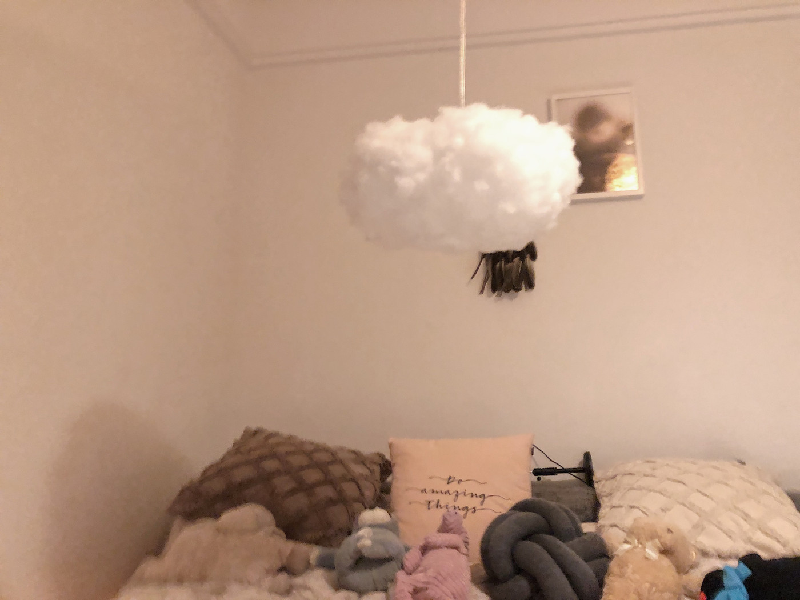
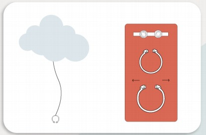
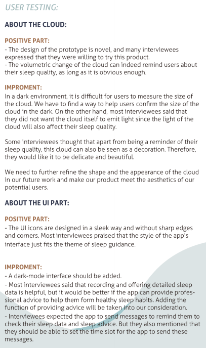

2021 / Interactive design
[Interactive Design] A "Cloud" Indicating Your Sleep Quality In Your Bedroom
How to improve the self-awareness of young adults to reduce sleep procrastination by an interactive artefact?

Background
Bedtime procrastination is defined as failing to go to bed at the intended time, while no external circumstances prevent a person from doing so. It is an important factor leading to insufficient sleep for young adults.
However, this issue cannot be intervened crudely and directly because of its behavioral implications. Researches showed keeping self-regulation will let people consume "mental energy", which indicates that, in a sense, bedtime procrastination is a self-protection mechanism for people to "save energy". Young people have accumulated pressure in their daily life and work, and created psychological burdens that are difficult to relieve. Under the influence of entertainment devices such as mobile phones before going to bed, uncontrollable retaliatory late nights or pointless procrastination become a habit for them. Chronic bedtime procrastination puts self-control and health in a negative feedback loop.
So how can a self-tracking interactive product help them to reduce the bedtime procrastination?
Enter the crowd
We conducted a semi-structured interview in order to clarify the direction of the design based on our initial thinking, and also explored some new ideas raised by the interviewees. The preset questions focus on 4 themes:
-Sleeping habits, -The reason for bedtime procrastination, -Attitude toward sleep and health, -Attitude towards existing related sleeping tracking products
Key takeaways: Interviews often use smartphones before going to bed, After a brief inquiry and discussion, the interviewees revealed that the lack of self-discipline is the main reason that causes bedtime procrastination.
Most interviewees agreed that getting insufficient sleep has harmed their health, and interviewees are all willing to get rid of bedtime procrastination.
Interviewees perferred physical products over smartphone apps, some showed expectation in the "playful" and "interactive" experience but not an app with a dashboard.
Overall, most of the interviewees objectively acknowledge the importance of sleep for health, but they cannot consciously control themselves to sleep on time. Instead, they put their time on various entertainment products and gradually neglected to pay attention to sleep.
Ideation
Based on the above user research, we find that this is an issue that people are troubled by but lack the ability to subjectively get rid of. Effective and gentle external impetus to improve user engagement is the key to the problem. We built a model called the "Sleep-desire balance" to describe it.
Sleep desire |__________________| | --The left side of the scale is people's subjective priorities for their sleep and health. And the right side is the need for relief due to accumulated stress. When people accumulate a certain amount of external stress during the day, it may be alleviated through bedtime activities, including being more attracted to certain things, being emotional, retaliatory entertainment, or craving alone time, etc, which are considered as the body's normal and reasonable desiring-driven self - release.
Sleep procrastination is caused by the slanting-right tendency for a long period of time (mostly because of the overconfidence in one's own health or psychological stress that cannot be alleviated), Therefore, only by reducing accumulated stress or improving subjective health weight can the product assist people to regulate sleep habits, and this is why some sleep monitoring products are discarded after being used by users for a period of time. Jokingly speaking, if a man/woman works non-stop until 4 am, he/she won't want to pick up his phone and watch an episode of soap opera before he/she goes to bed.
From this point of view, we decided to start with increasing the subjective sleep weight of the user, that is, when the user has long-term sleep procrastination, we will display his/her sleep status in a strong sense of engagement, and warn the user to make adjustments by themselves.
Design intervention
Participatory Data Physicalization
Participatory Data Physicalization(i.e., Let data become visible and accessible in public space) is an intriguing and tangible way in engaging people on specific issues. It has been used in health-related presentations to help people better understand the topic and trigger people's reflection through physical interaction. We use PDP in our design as a practice based on the advantages in a health-related presentation combining with our user evaluation. Firstly, the product with the PDP method works as a tangible indicator placed in the user's room, which can undoubtedly reduce the likelihood that people will ignore the information presented by the indicator. Secondly, according to our interviewee stated that most of the sleep-tracking app could only provide data about their sleep, which cannot impress the user to think about their health issue, At last, considering using electronic devices before bed is a significant factor causing bedtime procrastination, we chose to use the physical entity as the primary carrier of functionality rather than cell phones.
Gamification
According to the related researches, gamification is the use of game design elements in non-game contexts, which offers advantages for motivating behavior change for well-being. Although whether the usage of the single game element can be considered as a gamified design is still controversial, in our design we try to incorporate gamified elements as motivational affordances like feedback and virtual self-representation into the design of the interactive entity system to create a more engaging experience.
As the main body of the prototype, the cloud brings the joy of use for users. Its volume changes bring feedback to users intuitively, like the blood bar display system in action games, which shows the players their status and alerts them when they are not in good condition. The physical design also enhances the user's sense of engagement in the three-dimensional world, helping to increase user experience. In the webapp interface of the product, there is also a virtual cartoon cloud character that changes their expressions along with the user's sleep state to enhance the user's self-understanding.
In addition, our user research has shown that some people have concerns about their personal sleep status being exposed, as well as an overly institutionalized and frequent reward mechanism. Therefore, we don't refer to the common elements of Rewards and Social Interaction in gamification. We are inclined to make a ubiquitous interactive experience for users.
Solution
A cloud-like artefact
Our group decided to design a cloud-like artefact with a retractable gasbag and soft external material that can be expanded and compressed. When the user is sleeping well, the artefact keeps a relatively larger volume. If the user has varying degrees of sleep deprivation, clouds will shrink, and their volume will be relatively small. There is a rope hanging from the cloud, which is attached to a sleep-tracking ring on the other end, and the rope is connected to the ring for charging and data transmission purposes. When people sleep, they wear the ring to measure sleep duration and quality, and during the day, it can be connected to the cloud for charging.

How to use it
After the cloud-connected to a power source, it will require the user to pair up the cloud and the cell phone for network configuration and account set-up. The ring can send the tracking data to the cell phone by Near Field Communication (NFC). The user can put the ring close to the cell phone for refreshing and connection, and the data will be synchronized to the cloud by WLAN. The user can also use the rope for data transmission directly.
If the user wants to check the sleep duration or deep sleep information on the phone, he/she only need to put the ring near the phone, and the phone's browser will automatically redirect to the corresponding data page (NFC technology), without requiring the user to use the APP again.
The cloud-like artefact with expanding and compressing features in our design is considered as an indicator of sleep, which can intuitively expose the problems caused by lack of sleep. The compressed cloud aims to show the harm from the lack of sleep to people's body in a way that is both intuitive and not too radical. The cloud shape gives people a sense of tranquillity and serenity as interior decoration.
The cloud-like artefact with expanding and compressing features in our design is considered as an indicator of sleep, which can intuitively expose the problems caused by lack of sleep. The compressed cloud aims to show the harm from the lack of sleep to people's body in a way that is both intuitive and not too radical. The cloud shape gives people a sense of tranquillity and serenity as interior decoration.
The advantages of using the ring as the sleep tracker are:
1) The use of clinging devices can better collect sleep-related body information, such as movement, pulse activity, etc.
2) Minimizing the sense of touch and do not affect people's sleep feeling (for example, wearing a watch to measure sleep will reduce sleep comfort and affect sleep quality)
3) Small and beautiful, suitable for both men and women, the size can be adjusted according to needs.
NFC technology
NFC technology is used for the connection and information transmission between the ring and the mobile phone, because it can make the user's tracking information more secure, and can complete the short-distance and implicit paired communication requirements. In addition, this method does not force the user to download a new app, reducing the burden on the user.
User Test and Evaluation

Contribution
This is a four-person group project. I am mainly responsible for leading the team to plan the project direction and supervise the quality of subtasks. I also led and organized the complete user research process, completed second-hand research ,and determined the introduction of design elements; Analyzed survey results and build models. Finally, I finished the presentation documents and reports together with the visual designers of our group.
Related resource about the project
You can see the video presenting the usage scenario for the prototype here: https://16096389d.wixsite.com/website/videos